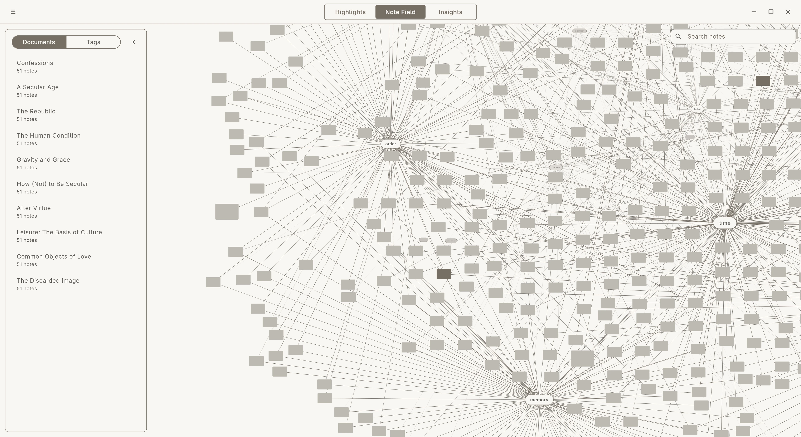
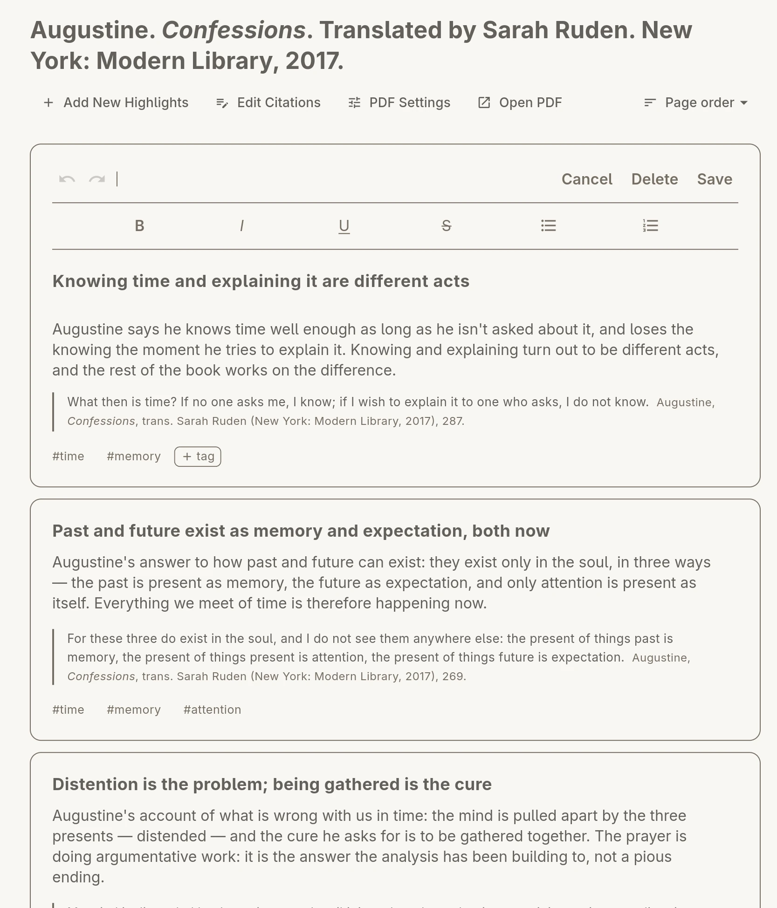
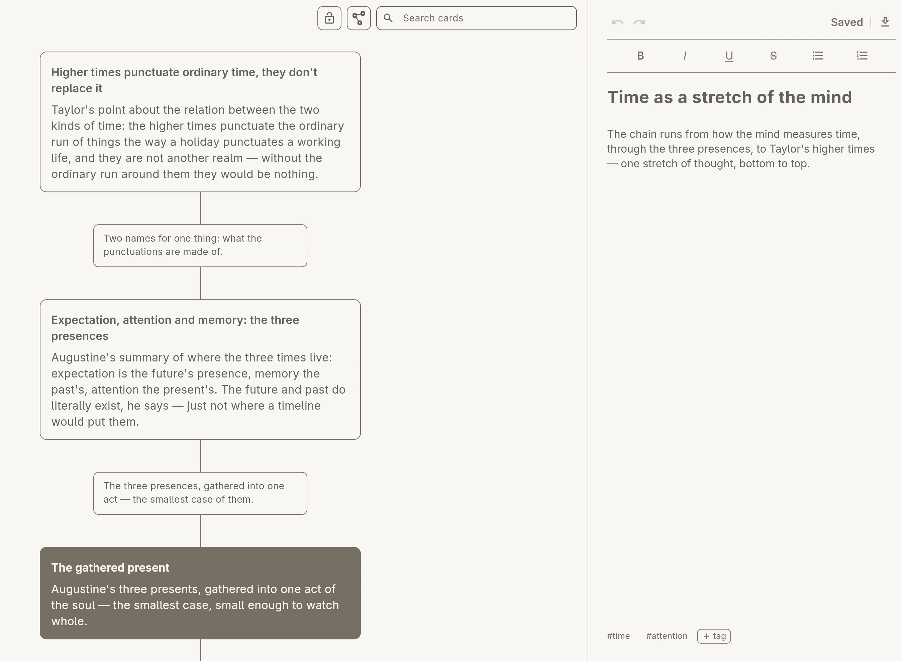
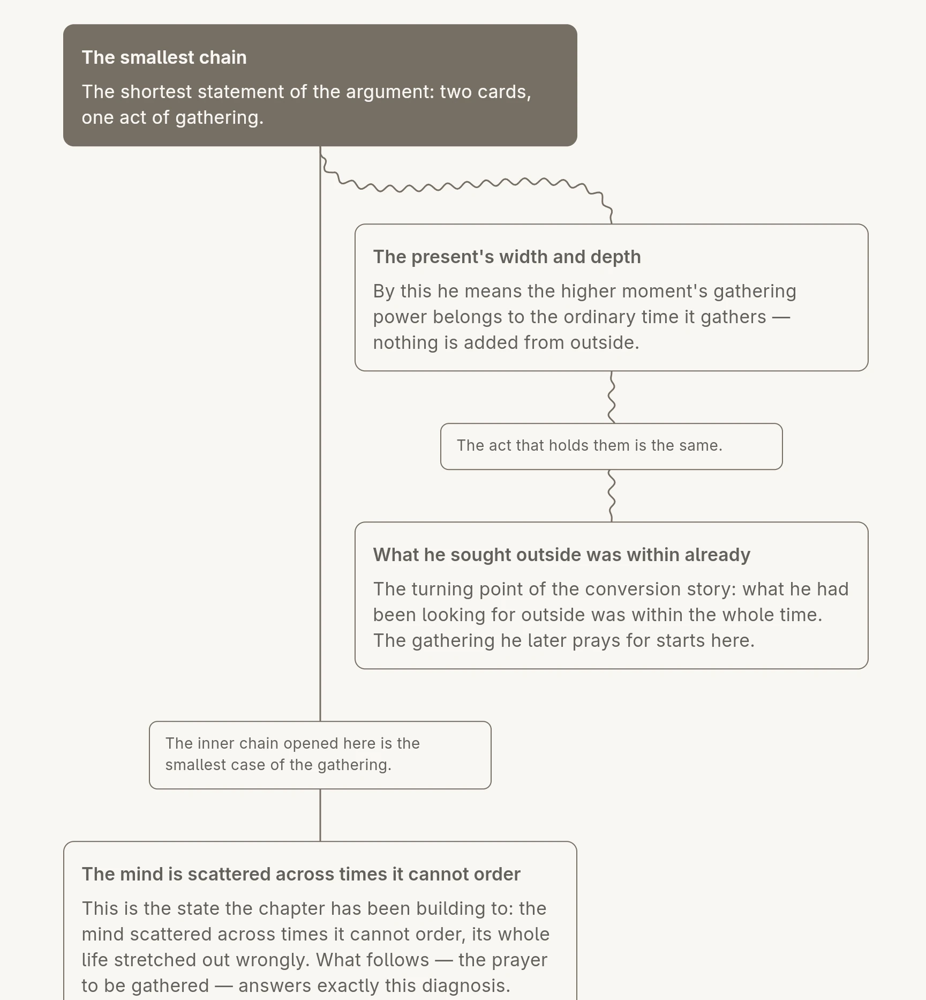

Introducing
THE INNERNET
A home for your highlights.

A web of interweaving, mutually illuminating, beautifully connected ideas — each uniquely yours.
Distraction-Free by Default; Infinitely Themeable by You.
From Quote to Note
-
Highlight
Come across something noteworthy: “I should remember this.”
-
Import
Bring it into your web of noteworthy, inspiriting ideas.
-
Comment
Consider its significance and note it for future reference.
Each highlight is given dedicated space and time, cited from its source, tagged, and automatically organized for easy reference in a week, a month, a year — who's to say?

Never lose track of a source
Everything is cited and the source of inspiration is never lost. Citation formats are interchangeable and automatically rewritten, and several popular academic styles are available: Turabian, Chicago, MLA, APA and more.
Connect Ideas and Create Insights
Gather each highlight from a range of sources into one space and draw connections. With each connection, a chain of reasoning emerges with precision and clarity. We call it an Insight.


Get The Innernet
Free for 30 days: the whole app, one source at a time. Then $20 once, for life — $10 for scholars.